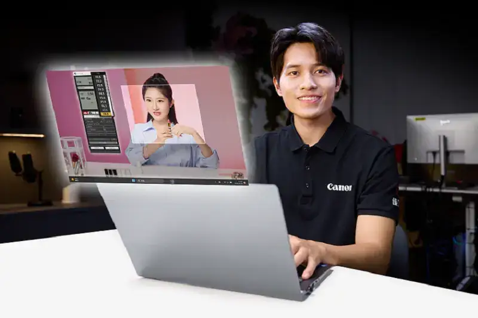
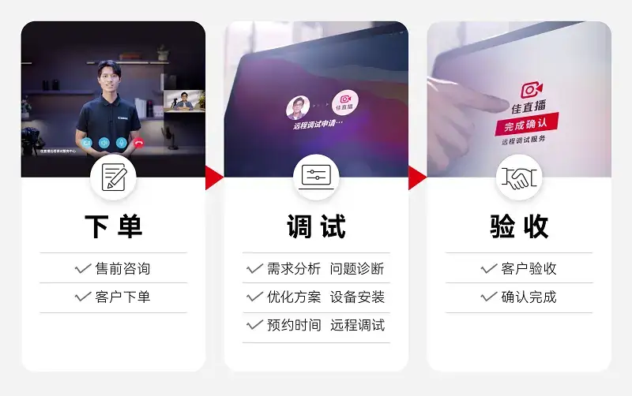

Published: 2023-12-18
Source link: https://www.cnphotos.net/academy/show-161.html
In the age of digital content marketing, live streaming has grown fast and become a key channel for entertainment, education, and business. To meet the industry's need for more flexible, efficient, and professional live-streaming technical support, Canon China today*1announced the launch of the Efficient Live Remote Setup Service. It aims to give live-streaming users professional, efficient, and standardized technical support.
The rise of live streaming has driven a growing demand for technical services. In early 2022, Canon launched the Efficient Live Certified Service Provider network to give live-streaming customers professional on-site technical support. It now covers 17 cities. Yet as the industry grows, it faces new challenges. On-site service often carries high visit costs. Because technical problems are complex, the response speed of on-site service can rarely meet the needs of distant clients for timeliness and frequent visits. To solve these pain points, Canon studied the needs of the live-streaming industry and invested in R&D to break past technical limits. It now offers the Efficient Live Remote Setup Service. The service has four strengths: Canon quality, professional setup, standardized service, and fast response. It gives the live-streaming industry a new option for professional support. Canon will use its on-site setup and remote setup services to give the industry more complete professional support.

Canon quality: 80 years focused on imaging and color
Efficient Live is the solutions brand that Canon China offers to the live-streaming market. Canon has focused on professional imaging products and application solutions for more than 80 years, and it has built deep expertise in imaging technology. The new Efficient Live Remote Setup Service is built on Canon's professional imaging setup know-how and in-house setup software. With a professional, efficient, and standardized service flow, and equal coverage nationwide, it gives live-streaming users a new technical experience and meets the industry's urgent need for fast, accurate support.
Professional setup: refining every detail of the frame
The Efficient Live Remote Setup Service is built on a professional technical team and in-house remote camera setup software. It gives live-streaming customers a one-stop service. It offers professional setup for color, lighting, image quality, audio, and streaming software, to help customers reach a better live-streaming state.
Listening to needs and a custom setup plan:The Efficient Live Remote Setup Service starts by listening to each customer's needs. It offers targeted setup to meet the technical demands of different live-streaming scenarios.
Color:Canon has professional expertise in color setup. Through color setup, it improves the color accuracy and texture of the live frame, and raises the viewer's visual experience.
Lighting:Canon has professional knowledge of lighting setup. Through careful lighting setup, it achieves good scene illumination, keeps the subject clear and the layers distinct, and raises the overall quality of the live frame.
Image quality:Canon has professional ability in image-quality setup. Through image-quality setup, it delivers clear, vivid, high-quality live frames that meet the demand for high-definition content.
Real-time setup feedback:The remote setup uses a real-time feedback loop to make the process more efficient. Through professional software and instant adjustment, you can see the effect at once during setup and optimize quickly.
Through these strengths in imaging setup, Canon offers comprehensive and in-depth technical support. It helps customers' live content reach a better level in color, lighting, and image quality, for an outstanding audio-visual experience.
A standardized service flow focused on the customer experience
To make sure every customer receives the same high-quality service, Efficient Live Remote Setup built a complete standardized flow of order, setup, and acceptance. After it receives an order, the support team at the remote setup center calls the customer to understand the live room's technical needs. A remote setup engineer then provides a technical diagnosis and an optimization plan for the live room. After these steps, the remote setup team performs the technical setup at the time both sides agree on. During the setup, the customer sees the effect at once and optimizes quickly. The process closes when the customer accepts the result.
Because the needs of live streaming change fast, and to further improve the experience, customers can request one more free optimization of the same live room within 7 days after acceptance. Canon hopes these added-value services help customers reach a better live state. In remote service, Canon focuses on efficient communication and friendly support to create a closer, more comfortable experience.

Fast response, low cost, high efficiency
Efficient Live Remote Setup breaks the limits of distance and gives live-streaming customers across the country the same high-quality service. By removing travel and time costs, it delivers a more economical and efficient setup plan, and helps customers gain an edge in a competitive market. Through a professional team and setup software, it responds quickly to customers' technical needs and solves problems faster.
With the launch of Efficient Live Remote Setup, Efficient Live aims to give the live-streaming industry more flexible and professional support. Going forward, Efficient Live will keep listening to the industry and keep innovating, to bring customers more real value through professional imaging technology. In this age of digital change, Efficient Live will work with the industry to meet the challenges ahead and build a new era of digital content.
The Efficient Live Remote Setup Service is now live on Canon's official platform. Live-streaming users are welcome to inquire and try it.
Remote setup service entry:https://www.canon.com.cn/special/clivestream/remote/index.html
For more information on the Efficient Live solutions, click:https://www.canon.com.cn/special/clivestream/index.html
For the video introduction to Efficient Live Remote Setup, click
00:00/00:46
BTNormalTo help readers, Canon in this article may refer to Canon China, Canon Inc., or the Canon brand.